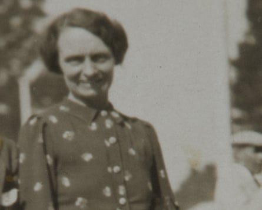

A 92-year-old man has been jailed for life with a minimum of 20 years after being convicted of the rape and murder of a woman in Bristol 58 years ago.
Ryland Headley will almost certainly spend the rest of his life in prison for killing Louisa Dunne at her home in 1967.
It is thought to the be the oldest cold case solved in modern English policing history and Headley is believed to be the oldest person in the UK to be convicted of murder.
After killing Dunne, who lived alone in the Easton area of Bristol, Headley left south-west England with his family and may have spent some time in London before moving to Ipswich in Suffolk.
Louisa Dunne.Photograph: Avon and Somerset police/PA Media
In 1977, he raped two women, aged 79 and 84, in their homes in Ipswich. He was convicted and originally jailed for life, but at an appeal doctors told the court the rapes arose due to sexual frustration arising from his marriage to an “ambitious and demanding” wife. The sentence was reduced and he spent only about two years in jail.
In 2023, cold case detectives in Avon and Somerset police reviewed the unsolved murder of Dunne and sent off the skirt she had been wearing and samples of hair for analysis.
A full DNA profile was obtained and a match with Headley found. His DNA was on the national database because he was arrested, but not charged, over an unrelated matter in 2012.

Police bodycam footage shows moment of Ryland Headley's arrest – video
Dunne’s granddaughter, Mary Dainton, has spoken about how the family had given up hope of the killer ever being found and been resigned to living with the “emptiness and sadness” the crime had left them with.
She said: “When people found out about the murder, including friends, they withdrew – there is a stigma attached to rape and murder.
“Since Ryland Headley was charged, I’ve struggled emotionally in ways I did not anticipate, and it falls to me to speak for people who are no longer here. It saddens me deeply that all the people who knew and loved Louisa are not here to see that justice is being done.”
The National Crime Agency is working with Avon and Somerset police to identify whether Headley has committed any other offences.